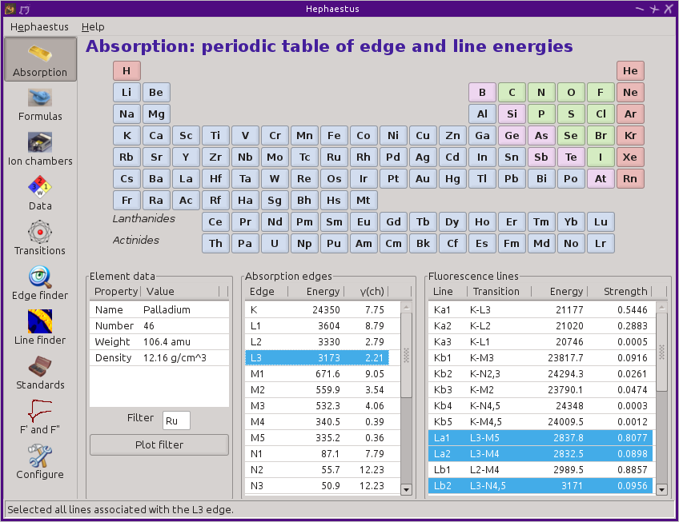

Demeter
![[Demeter logo]](images/Demeter.png)
X-ray Absorption Spectroscopy Using Feff and Ifeffit.
Windows Users:
Demeter © 2006-2015 Bruce Ravel
About Demeter
Demeter is a comprehensive system for processing and analyzing X-ray Absorption Spectroscopy data.
Demeter is:- currently at version 0.9.22
- available for linux, Windows, and Macintosh
- a set of perl modules and related files
- a programming tool -- it is the thing from which applications are built
- free software, freely available from a git server
- actively developed and maintained
- in use by its author and users for real data analysis problems
- a front end to Feff6, Larch, and Ifeffit
- the code base for Athena and Artemis
- named for the Greek goddess of the harvest
- To ask questions or report bugs :
- » Use the Ifeffit Mailing List «
- To cite Demeter in a publication, use
- B. Ravel and M. Newville, ATHENA, ARTEMIS, HEPHAESTUS: data analysis for X-ray absorption spectroscopy using IFEFFIT, Journal of Synchrotron Radiation 12, 537–541 (2005) doi:10.1107/S0909049505012719
Windows Installer & Updater
- Download the 64 bit Installer package and double-click to install the base Demeter system (version 0.9.22)
- Download the 32 bit Installer package and double-click to install the base Demeter system (version 0.9.22)
It's that simple! (Version 0.9.22 is an installer package, there is no updater package for this release and the documentation is included.)
Pre-release trial #2 for Demeter 0.9.23: «64 bit installer» «32 bit installer»
(Pre-release #2 is an attempt to address this issue.)
Macintosh Installation
The Macintosh package uses MacPorts and is currently at version 0.9.22.
- Carefully follow the steps to install Macports at http://www.macports.org/install.php.
- Open a new Terminal window and type the following:
sudo port install xorg-server demeter
It will take a while depending on your computer and network speed. - If this is your first time installing
xorg-server, log out and log back in. This is needed to set theDISPLAYenvironment variable.
When it is done, launch Athena by typing the following in Terminal:
athena
Note: Make sure you are in a directory you have write permission to (like your home directory) because hidden files are created at launch time.
To update a previously installed version of Demeter to the latest, open a Terminal window and do
sudo port selfupdate && sudo port upgrade demeter
If you are not using a system-wide MacPorts installation,
running commands as sudo is not
necessary.
Please report problems with the MacPorts package qto the Ifeffit mailing list.
Screenshots
| Athena | Artemis | Hephaestus |
|---|---|---|
![[Athena]](images/athena_withdata.png)
|
![[Artemis]](images/fes2-firstshellfit.png)
|
 |
{kind=link}
Documentation
- Athena Users' Guide: This is the users' guide for the current version of Athena. (PDF version)
- Artemis Users' Guide: This is the users' guide for the current version of Artemis. (PDF version)
- Lecture videos: In November 2011, I presented an XAS training course at the Diamond Light Source. All my lectures and software demonstrations were recorded along with the computer desktop. The Diamond technical staff did a great job assembling all of this material in streaming video. (Scroll to the bottom of the page.) Linux users: Click here for a hint about using Microsoft Media Server (mms:) links with Firefox.
- XAS Education: My collection of presentations that I give during XAS training courses. You can also find all the data used in the presentations and in the various videos linked above. PDF presentations are shown at my my Speaker Deck page. Here is a zip file with all the example data.
- Programming documentation: This is the documentation embedded into each module which is part of the Demeter distribution. The PODs have been nicely formatted for html and organized into a structure that resembles a CPAN project page.
- Demeter Programming Guide: The DPG is a how-to guide written at a higher level than the programming documentation. It includes descriptions of how to use the main components of Demeter as well as several complete examples.
- Athena's new JSON-style project file. This allows a non-Demeter application to easily export data directly to Athena.
- Demeter Changes list: The changes file for Demeter, Athena, Artemis, and Hephaestus. This version might be slightly more up-to-date.
- Demeter To Do list: Bruce's "To Do" list for Demeter, Athena, Artemis, and Hephaestus. This version might be slightly more up-to-date.
Other topics
- Browse source code on GitHub
- Demeter source code installation instructions
- Dave Hughes' excellent guide to installation on an Ubuntu system
- Greg Hutchings' helpful guide to solving a common installation problem on Windows.
- Hints for submitting a helpful bug report
- Hints on how to ask questions on the Ifeffit mailing list
- Suggestions for contributing to Demeter
Earlier packages
- Installer 0.9.21: [64 bit] [32 bit]
- Installer 0.9.20: [64 bit] [32 bit]
- Installer 0.9.19 (This package has some problems. See the this thread.)
- Installer 0.9.13, then update to one of...
 The content of this page is licensed under a
Creative Commons Attribution-ShareAlike 4.0 International License.
Many of the documents linked to on this page are available
under this or an earlier version of the
Attribution-ShareAlike International License. (The main
exceptions are the link to the Demeter reference and the page of
lecture videos, which are hosted by and property of Diamond
Light Source.) Reuse and repurposing of these materials is
encouraged by the Attribution-ShareAlike License.
The content of this page is licensed under a
Creative Commons Attribution-ShareAlike 4.0 International License.
Many of the documents linked to on this page are available
under this or an earlier version of the
Attribution-ShareAlike International License. (The main
exceptions are the link to the Demeter reference and the page of
lecture videos, which are hosted by and property of Diamond
Light Source.) Reuse and repurposing of these materials is
encouraged by the Attribution-ShareAlike License.
Hosted on GitHub Pages using the (slightly modified) Dinky theme